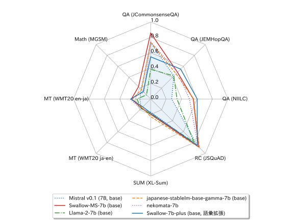
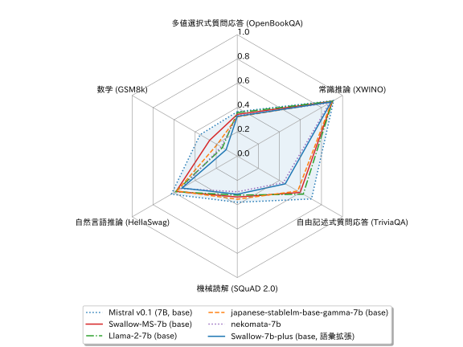
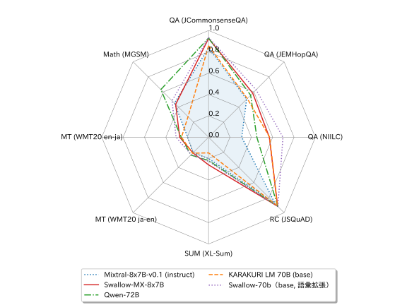

2024年3月11日
Swallow (Mistral)
Mistral 7BおよびMixtral 8x7Bの日本語能力を強化した大規模言語モデル (Swallow-MS 7B, Swallow-MX 8x7B) です。Apache 2.0の寛容なライセンスでモデルのパラメータ（重み）を公開していますので、研究やビジネスに活用できます。 (2024年3月11日公開)

旧型（より性能の高いモデルが開発・公開されています）
公開モデル
更新履歴
- 2024-04-26: Swallow-MS-7b-instruct-v0.1 を公開。
- 2024-03-11: Swallow-MS-7b-v0.1, Mixtral-8x7B-Instruct-v0.1 を公開。
概要
大規模言語モデルSwallow-MS 7BおよびSwallow-MX 8x7Bは、東京工業大学情報理工学院の岡崎研究室と横田研究室、国立研究開発法人産業技術総合研究所の研究チームで開発された大規模言語モデルです。英語の言語理解や対話で高い能力を持つ大規模言語モデルMistral 7BおよびMixtral 8x7Bの日本語能力を強化するため、研究チームは日本語の大規模な言語データを用いて継続事前学習を行いました。研究チームで実施した性能評価では、オープンな7Bの大規模言語モデルの中で、Swallow-MS 7Bが日本語の知識や推論、言語生成に関するベンチマークにおいて最高性能を達成しました（2024年3月現在、ベースモデル間の比較において）。また、Mixture of Experts (MoE) アーキテクチャを採用し、日本語を強化したオープンなモデルとしては、Swallow-MX 8x7Bが史上初となります。今回公開したモデルはHugging Faceからモデルをダウンロードできます。
Swallow-MS 7BおよびSwallow-MX 8x7BのライセンスはMistral 7BおよびMixtral 8x7BのApache 2.0を継承しています。このライセンスに従う限りにおいては、研究および商業目的での利用が可能です。
性能
Swallow-MS 7B
Mistral 7BやLlama 2に継続事前学習を行ったモデルや、その他の7Bモデルの日本語の性能を比較してみましょう。 Swallow-MS 7Bは継続事前学習でMistral 7Bの日本語能力を着実に引き上げました。 評価に用いた日本語ベンチマークでは、2024年3月時点で公開されている他のオープンな7Bモデルよりも、Swallow-MS 7Bが平均的に高い性能を示しています。 特に、JCommonsenseQA (JComQA) やNIILCなど、知識を問うタスクでの大幅な性能向上を達成しており、これはLlama 2に対してSwallowが示す性能の傾向と似ています。 また、Swallow-MS 7BではMistral 7Bに日本語の語彙を追加していますので、few-shot事例をより多く詰め込んだり、文字化けした生成を抑制したり、生成を高速化できます。
| モデル | 日本語平均 | JComQA | JEMHopQA | NIILC | JSQuAD | XL-Sum | 日英翻訳 | 英日翻訳 | MGSM |
|---|---|---|---|---|---|---|---|---|---|
| CyberAgentLM2-7B (base) | 0.3098 | 0.2198 | 0.5047 | 0.5066 | 0.7799 | 0.0233 | 0.1499 | 0.2345 | 0.0600 |
| Llama 2 7B (base) | 0.3201 | 0.3852 | 0.4240 | 0.3410 | 0.7917 | 0.1905 | 0.1738 | 0.1783 | 0.0760 |
| Japanese Stable LM Beta 7B (base) | 0.3366 | 0.3610 | 0.4478 | 0.4432 | 0.8318 | 0.2195 | 0.1226 | 0.1946 | 0.0720 |
| Japanese Stable LM Beta 7B (base, 語彙拡張) | 0.2937 | 0.2172 | 0.4482 | 0.4309 | 0.8202 | 0.0757 | 0.1453 | 0.1601 | 0.0520 |
| ELYZA-japanese-Llama-2-7b (base) | 0.3467 | 0.5791 | 0.4703 | 0.4019 | 0.8226 | 0.1312 | 0.1289 | 0.1795 | 0.0600 |
| ELYZA-japanese-Llama-2-7b-fast (base, 語彙拡張) | 0.3312 | 0.5308 | 0.4330 | 0.3898 | 0.8131 | 0.1289 | 0.1143 | 0.1678 | 0.0720 |
| Youri 7B (base) | 0.3767 | 0.4620 | 0.4776 | 0.4999 | 0.8506 | 0.1957 | 0.1971 | 0.2671 | 0.0640 |
| Swallow 7B（base, 語彙拡張） | 0.3940 | 0.4808 | 0.5078 | 0.5968 | 0.8573 | 0.1830 | 0.1511 | 0.2510 | 0.1240 |
| Swallow 7B-plus (base, 語彙拡張) | 0.4090 | 0.5478 | 0.5493 | 0.6030 | 0.8544 | 0.1806 | 0.1441 | 0.2568 | 0.1360 |
| Qwen-7B | 0.3742 | 0.7712 | 0.4234 | 0.2376 | 0.8594 | 0.1371 | 0.1801 | 0.1689 | 0.2160 |
| Nekomata 7B | 0.4185 | 0.7417 | 0.4928 | 0.5022 | 0.8707 | 0.1676 | 0.1815 | 0.2673 | 0.1240 |
| Mistral-7B-v0.1 (7B, base) | 0.3717 | 0.7301 | 0.4245 | 0.2722 | 0.8563 | 0.2006 | 0.1733 | 0.1405 | 0.1760 |
| Japanese Stable LM Base Gamma 7B (base) | 0.4301 | 0.7364 | 0.4643 | 0.5568 | 0.8910 | 0.2293 | 0.1561 | 0.2390 | 0.1680 |
| Swallow-MS 7B (base, 語彙拡張) | 0.4524 | 0.8570 | 0.4915 | 0.5519 | 0.8802 | 0.1988 | 0.1667 | 0.2494 | 0.2240 |
続いて、英語の性能を見てみましょう。 言語間転移の継続事前学習でよく見られる現象ですが、英語タスクでは元のモデル（Mistral 7B）よりも継続事前学習後のモデル（Swallow-MS 7B）の方が性能が低下しています。 日本語の性能向上に連動するかのように、特にTriviaQAなどの知識を問うタスクでの性能低下が目立ちます。 日本語と英語のデータを9:1で混ぜたり、学習率を調整するなどして、日本語の性能を高めつつ英語の性能低下を軽減するように努めていますが、モデルサイズが小さいためか、性能低下を完全に防ぐことはできませんでした。 とは言え、Swallow-MS 7Bの英語の平均性能はLlama 2 7Bを若干上回っていますし、Swallow 7Bよりは高いですので、日本語と英語の両方に強いモデルとして活用されることを期待しています。
| モデル | 平均 | OpenBookQA | XWINO | TriviaQA | SQuAD 2.0 | HellaSwag | GSM8k |
|---|---|---|---|---|---|---|---|
| CyberAgentLM2-7B (base) | 0.4026 | 0.2860 | 0.8581 | 0.3496 | 0.3510 | 0.5003 | 0.0705 |
| Llama-2-7b (base) | 0.4895 | 0.3580 | 0.9049 | 0.6265 | 0.3207 | 0.5860 | 0.1410 |
| Japanese Stable LM Beta 7B (base) | 0.4736 | 0.3620 | 0.8994 | 0.5903 | 0.2992 | 0.5707 | 0.1198 |
| Japanese Stable LM Beta 7B (base, 語彙拡張) | 0.4545 | 0.3520 | 0.8942 | 0.5549 | 0.3079 | 0.5644 | 0.0538 |
| ELYZA-japanese-Llama-2-7b (base) | 0.4703 | 0.3400 | 0.8989 | 0.5875 | 0.2721 | 0.5595 | 0.1638 |
| ELYZA-japanese-Llama-2-7b-fast (base, 語彙拡張) | 0.4608 | 0.3280 | 0.8989 | 0.5817 | 0.2605 | 0.5530 | 0.1425 |
| Youri 7B (base) | 0.4566 | 0.3400 | 0.8938 | 0.5257 | 0.3297 | 0.5540 | 0.0963 |
| Swallow 7B（base, 語彙拡張） | 0.4399 | 0.3180 | 0.8817 | 0.4836 | 0.3125 | 0.5308 | 0.1130 |
| Swallow 7B-plus (base, 語彙拡張) | 0.4370 | 0.3280 | 0.8929 | 0.4558 | 0.3134 | 0.5259 | 0.1061 |
| Qwen-7B | 0.5412 | 0.3640 | 0.8933 | 0.5695 | 0.3799 | 0.5787 | 0.4617 |
| Nekomata 7B | 0.4380 | 0.3340 | 0.8766 | 0.4371 | 0.2933 | 0.5340 | 0.1531 |
| Mistral-7B-v0.1 (7B, base) | 0.5577 | 0.3660 | 0.9157 | 0.7050 | 0.3799 | 0.6264 | 0.3533 |
| Japanese Stable LM Base Gamma 7B (base) | 0.4860 | 0.3240 | 0.8976 | 0.5745 | 0.3546 | 0.5739 | 0.1911 |
| Swallow-MS 7B (base, 語彙拡張) | 0.5042 | 0.3440 | 0.9037 | 0.5976 | 0.3364 | 0.5810 | 0.2623 |
これらの評価結果の一部を抜き出し、レーダーチャートとして可視化したものを載せておきます。


Swallow-MX 8x7B
続いて、Swallow-MX 8x7Bについて見ていきたいと思います。 このモデルは7Bのモデルを8個組み合わせたMixture of Experts (MoE) モデルですので、パラメータ総数が近い70Bモデルと比較します（Mixtralは注意機構や層正規化のパラメータをエキスパート間で共有しているため、パラメータ総数は47Bになります）。 日本語のベンチマークにおける評価では、Swallow-MX 8x7Bは継続事前学習でMixtral 8x7Bの日本語能力を着実に引き上げたことが分かります。 やはり、JCommonsenseQA (JComQA) やNIILCなど、知識を問うタスクでの大幅な性能向上が見られます。 よりパラメータ総数の多いSwallow 70Bを上回ることはできませんでしたが、70B級のモデルに匹敵する性能を示すことから、MoEモデルのポテンシャルの高さが伺えます。
| モデル | 日本語平均 | JComQA | JEMHopQA | NIILC | JSQuAD | XL-Sum | 日英翻訳 | 英日翻訳 | MGSM |
|---|---|---|---|---|---|---|---|---|---|
| KARAKURI LM 70B (base) | 0.4669 | 0.8579 | 0.5125 | 0.5713 | 0.9100 | 0.1464 | 0.2113 | 0.2540 | 0.2720 |
| Llama-2-70b (base) | 0.4830 | 0.8686 | 0.4656 | 0.5256 | 0.9080 | 0.2361 | 0.2398 | 0.2643 | 0.3560 |
| Japanese Stable LM Beta 70B (base) | 0.5138 | 0.9115 | 0.4925 | 0.6042 | 0.9192 | 0.2573 | 0.2335 | 0.2765 | 0.4160 |
| Swallow 70B（base, 語彙拡張） | 0.5528 | 0.9348 | 0.6290 | 0.6960 | 0.9176 | 0.2266 | 0.2298 | 0.3043 | 0.4840 |
| Qwen-14B | 0.4431 | 0.8829 | 0.4243 | 0.3220 | 0.8980 | 0.1851 | 0.2224 | 0.2223 | 0.3880 |
| Qwen-72B | 0.5244 | 0.9294 | 0.5566 | 0.4518 | 0.9159 | 0.2179 | 0.2356 | 0.2561 | 0.6320 |
| Mixtral 8x7B v0.1 (instruct) | 0.4486 | 0.8400 | 0.5033 | 0.3107 | 0.8808 | 0.2002 | 0.2063 | 0.1956 | 0.4520 |
| Swallow-MX 8x7B | 0.5208 | 0.9258 | 0.5843 | 0.5687 | 0.9148 | 0.2589 | 0.2074 | 0.2705 | 0.4360 |
最後に、Swallow-MX 8x7Bの英語の性能を見てみたいと思います。 Swallow-MS 7Bの時とは異なり、Swallow-MX 8x7Bでは元のモデルであるMixtral 8x7B Instructからの性能低下があまり見られません。 英語の性能低下の軽減は Swallow 70B でも確認されているため、MoEアーキテクチャか否かを問わず、モデルパラメータ数の大規模化が性能低下の軽減に有効である可能性があります。 ただしSwallow-MX 8x7Bの継続事前学習では（学習フレームワークのバグ検証の歴史的経緯により）日本語:英語=72:28の学習データを採用していますので、学習データの日英混合比の違いによる可能性についても、今後検証したいと考えています。
| モデル | 平均 | OpenBookQA | XWINO | TriviaQA | SQuAD 2.0 | HellaSwag | GSM8k |
|---|---|---|---|---|---|---|---|
| Llama-2-70b (base) | 0.6268 | 0.4280 | 0.9290 | 0.8239 | 0.3770 | 0.6742 | 0.5284 |
| Japanese Stable LM Beta 70B (base) | 0.6288 | 0.4200 | 0.9299 | 0.8203 | 0.3867 | 0.6729 | 0.5428 |
| Swallow 70B（base, 語彙拡張） | 0.6042 | 0.4220 | 0.9204 | 0.7756 | 0.3745 | 0.6458 | 0.4867 |
| Qwen-14B | 0.5945 | 0.3720 | 0.9067 | 0.6543 | 0.4167 | 0.6473 | 0.5701 |
| Qwen-72B | 0.6369 | 0.4040 | 0.9200 | 0.7501 | 0.3401 | 0.6647 | 0.7422 |
| Mixtral 8x7B v0.1 (instruct) | 0.6335 | 0.4160 | 0.9226 | 0.7740 | 0.3714 | 0.6823 | 0.6346 |
| Swallow-MX 8x7B | 0.6129 | 0.3740 | 0.9170 | 0.7847 | 0.3801 | 0.6520 | 0.5694 |

なお、ベンチマークのスコアを異なるデータセット間で比較することができないことに注意してください。例えば、あるモデルの日本語の評価結果において、機械翻訳のスコアよりも数学のスコアの方が高いとき、そのモデルが翻訳よりも数学が得意であることを示唆しているのではありません（問題の難易度や採点基準が全く異なる試験の結果を比較しているようなものです）。同様の理由により、あるモデルの 日本語タスクのスコアの平均値よりも、英語タスクのスコアの平均値の方が高いからといって、そのモデルは英語の方が得意、と結論付けることもできません。ベンチマークのデータセットによって評価尺度や難易度が異なるため、このレーダーチャートの形状だけからタスクの得意・不得意について議論することは不適切です。
評価ベンチマーク
日本語の評価ベンチマークとしてllm-jp-eval(v1.0.0)およびJP Language Model Evaluation Harness(commit #9b42d41)を用いました。内訳は以下の通りです。
- 多値選択式質問応答 (JCommonsenseQA [Kurihara+, 2022])
- 自由記述式質問応答 (JEMHopQA [石井+, 2023])
- 自由記述式質問応答 (NIILC [関根, 2003])
- 機械読解 (JSQuAD [Kurihara+, 2022])
- 自動要約 (XL-Sum [Hasan+, 2021])
- 機械翻訳 (WMT2020 ja-en [Barrault+, 2020])
- 機械翻訳 (WMT2020 en-ja [Barrault+, 2020])
- 数学 (MGSM [Shi+, 2023])
なお、大規模言語モデルの評価ベンチマークとしてよく用いられる自然言語推論（NLI）については、言語モデルがラベルを偏って予測する傾向があり、そのラベル予測の偏りが正解と偶然一致するとスコアが高くなるため、（特に7Bで）評価結果が安定しませんでした。そのため、今回は評価ベンチマークから除外しています。
英語の評価ベンチマークとしてLanguage Model Evaluation Harness(v.0.3.0)を用いました。内訳は以下の通りです。
- 多値選択式質問応答 (OpenBookQA [Mihaylov+, 2018])
- 自由記述式質問応答 (TriviaQA [Joshi+, 2017])
- 機械読解 (SQuAD 2.0 [Rajpurkar+, 2018])
- 常識推論 (XWINO [Tikhonov & Ryabinin, 2021])
- 自然言語推論 (HellaSwag [Zellers+, 2019])
- 数学 (GSM8k [Cobbe+, 2021])
構築方法
Swallow-MS 7BとSwallow-MX 8x7Bはそれぞれ、Mistral 7BとMixtral 8x7B Instructに継続事前学習を施すことによって構築されています。 算術推論とコード生成に強い日本語大規模言語モデルを目指し、ソースコードのコーパスをテキストコーパスに混ぜて利用しています。 具体的には、Swallow-MS 7Bでは数学関連ソースコードのコーパスであるAlgebraicStack [Azerbayev+, 2024]を学習し、Swallow-MX 8x7BではAlgebraicStackに加えて、自然言語とソースコードが対になったコーパスであるThe Vault [Nguyen+, 2023]も学習しました。 なおソースコードのコーパスの利用がもたらす効果は、比較実験などにより今後検証を進めたいと考えています。 テキストコーパスは、Swallowと同様に日本語と英語が9:1（ただし、Swallow-MX 8x7Bでは72:28）の混合比で、Swallowコーパスと日本語Wikipedia，英語はRefinedWebとThe StackのarXivサブセットを用いました。 今回は、Swallow-MS 7Bにのみ日本語の語彙を追加し、Swallow-MX 8x7Bには語彙拡張を適用しませんでした。 語彙追加により、語彙に含まれる平仮名文字の種類数は58から83に、片仮名文字の種類数は76から87に、漢字の種類数は1,456から3,208に増加しました。 MistralおよびMixtralの追加事前学習には、独自に開発したソフトウェアを用いました。
付記
Swallow-MSおよびSwallow-MXの研究開発は、産総研が構築・運用するAI橋渡しクラウド（ABCI: AI Bridging Cloud Infrastructure）の「大規模言語モデル構築支援プログラム」、国立研究開発法人新エネルギー・産業技術総合開発機構（NEDO）の「次世代人工知能・ロボットの中核となるインテグレート技術開発」プロジェクト (JPNP18002) の「熟練者観点に基づき、設計リスク評価業務における判断支援を行う人工知能適用技術の開発」、その他の支援によって実施されました。なお、本成果の一部は、大学共同利用機関法人情報・システム研究機構国立情報学研究所、産総研、東工大、NIIが主催する勉強会LLM-jp（NII、東北大学、東京大学、早稲田大学などが参加するLLM研究開発チーム）が2023年9月に共同で提案して採択された、産総研ABCIの一定部分（Aノードと呼ばれる高性能な計算ノード）を最大60日間占有利用する機会を提供する「大規模基盤モデル構築支援プログラム」によるものです。また、学習した大規模言語モデルの評価実験では、LLM-jp （LLM勉強会）で開発されているデータや知見を活用しました。